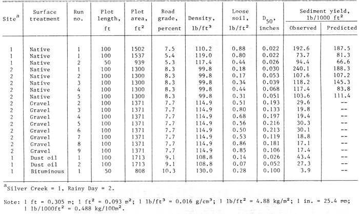
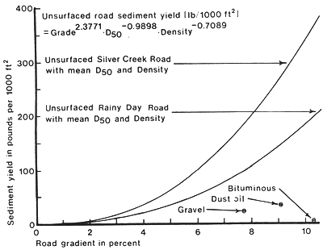

Rocky Mountain Research Station
Moscow Forestry Sciences Laboratory
1221 South Main Street, Moscow, ID 83843
https://forest.moscowfsl.wsu.edu/
| USDA Forest Service | Rocky Mountain Research Station | Moscow FSL | Soil and Water Engineering |
|---|
Edward R. Burroughs, M. ASCE, Research Engineer, Intermountain Forest and Range Experiment Station,
Forest Service, U.S. Department of Agriculture, Moscow, ID.
John G. King, Research Hydrologist, Intermountain Forest and Range Experiment Station,
Forest Service, U.S. Department of Agriculture, Moscow, ID.
Abstract
Simulated rainfall was used to generate runoff and sediment yield from forest roads and fillslopes built in granitic soils to test the effectiveness of various surfacing materials, mulches, and barriers as erosion control treatments. An empirical equation is presented and used to estimate the relative effectiveness of gravel, dust oil, and bituminous surface treatments in reducing sediment yield relative to that of an unsurfaced road. The equation uses road grade, surface density, and the D50 of loose soil on the surface to predict sediment yield from unsurfaced roads. Gravel, dust oil, and bituminous surfacing reduce sediment yield by factors of 4.3, 7.7, and 91 relative to the sediment yield for a comparable unsurfaced road. Dense grass cover (97 percent) on 1.5:1 fillslopes reduces sediment yield by 99.6 percent of that from a bare slope with a loose soil surface. Wood fiber mulch and a sediment barrier of cull logs and logging slash reduce bare slope sediment yield by 91 and 87 percent, respectively.
Introduction
The impact of forest road construction on water quality and fish habitat is a serious problem for engineers, hydrologists, and foresters. Control of surface erosion is an important and expensive item in forest road construction. But, erosion control is hampered by our limited ability to estimate sediment yield from forest roads and to evaluate the effectiveness of erosion control treatments. This paper describes a series of studies to develop technology for an operational method to design cost-effective erosion control treatments for forest roads.
Simulated rainfall has been used to calibrate physical process models such as ROSED (2), because, among other advantages, a wide range of soils can be easily tested for relative erodibility by applying the same "design storm." Runoff and sediment yield data from natural rainfall and, especially, snowmelt are needed to confirm relative differences in erodibility found with simulated rainfall. Our research approach is to use simulated rainfall to measure relative differences in erodibility and sediment yield over a wide range of soils and road geometries, supplemented with a few instrumented road sections.
Results from three field sites where simulated rainfall was applied to forest roads built in granitic materials are reported in this paper. Soils derived from Idaho Batholith granites were selected as the highest priority because this material, together with the surrounding "borderzone" of metamorphosed granitics, comprises the largest area of highly erodible material on forest lands in Idaho and western Montana. The sprinkling infiltrometer has been used on forest roads in three Idaho locations: the Silver Creek Experimental Watershed (Boise National Forest), the Rainy Day Road (Nezperce National Forest), and the Horse Creek Administrative/Research Study Area.
Rainfall Simulation Equipment
A large sprinkling infiltrometer was used to apply rainfall uniformly over plot surfaces at a rate of 2 in./h (5.1 cm/h) for 25-40 minutes. The system consists of irrigation sprinklers on 11-ft (3.4-m) risers supplied by a 250-gal/min (946-L/min) pump from a 5,000-gal (18.9-m3) butyl rubber bag reservoir and a 2,500-gal (9.5-m3) pumper-tanker. Sprinklers were spaced 20 ft (6.1 m) apart in rows 17.3 ft (5.3 m) apart, with sprinklers in alternate rows offset 10 ft (3.1 m) for more uniform rainfall coverage. A pressure regulator at the base of each sprinkler ensured a constant pressure of 28 psi (193 kPa). This configuration provided a uniform aerial distribution of rainfall for windspeeds less than 7 mile/h (11.3 km/h). Kinetic energy of the applied rainfall at 2 in./h (5.1 cm/h) is about 60 percent of natural rainfall at the same intensity (T. J. Ward, personal communciation).
Silver Creek Study
Simulated rainfall was applied to six road sections with three different treatments: native granitic soil, native soil with dust oil, and native soil with bituminous surfacing. Test plots of roadway surface, 50 ft (15.25 m) or 100 ft (30.5 m) long by about 17 ft (5.2 m) wide, were isolated from the adjacent roadway with barriers sealed to the surface (Fig. 1A). Longitudinal slope of the test sections varied from 5.3 to 10.3 percent. Simulated rainfall was applied to the road surface from two lines of sprinklers, one in the ditch and one on the road shoulder. Runoff from the road surface was routed in a metal trough to a flume for measurement of discharge and collection of sediment samples.
Rainy Day Road Study
Two sections of an existing forest road with an average 8 percent grade were widened, insloped, and graded; the cutslope was shaped to 1:1 backslope; one section was gravel surfaced; and both sections were rolled. Two 100-ft (30.5-m) plots were established, one on the surfaced and one on the native soil section. Gravel surfacing was a 4-in. (10-cm) layer of crushed gneissic rock described as clean 1.5 in. (3.81 cm) minus. A 4-in. (10 cm) layer of the same gravel was placed in the ditch for a series of rainfall applications to measure the relative effectiveness of a protected ditch in reducing sediment yield.
Cutslope height averaged about 12 ft (3.7 m) for both plots. The upper 2 ft (0.6 m) is a silt loam loess material with considerable volcanic ash. Weathered granitic "borderzone" materials of sandy to gravelly sandy loams comprise the lower 10 ft (3.1 m) of the cutslope. No erosion control treatments were applied to the shaped cutslopes prior to this study.
Boundaries were established to isolate each 100-ft (30.5-m) plot for measurement of surface runoff and sediment yield. Within each plot, barriers and collection gutters, were installed to isolate runoff from the road surface from that in the ditch. Two flumes with flowmeters provided a continuous measurement of runoff from the road surface and road ditch-cutslope.
When the barrier and collector were removed, all runoff from the road surface (except for a small triangular area immediately upstream from the road flume intake pipe in the corner of the plot) flowed into the road ditch. Comparison of measurements taken with and without barriers allowed calculation of the contribution of the road surface and ditch-cutslope to total runoff and sediment yield from the plot. Water and sediment yield from the road surface and the ditch-cutslope were separately monitored for 14 simulated rainfall applications (runs). The combined runoff from the road surface and the ditch-cutslope was monitored for another 15 runs. Simulated rainfall was applied to each plot by three rows of sprinklers, one on the road shoulder, one in the ditch, and one at the top of the cut-slope (Fig. 1B).
Horse Creek Study
A 70-ft (21.3-m) section of fillslope along an existing road was isolated (Fig. 1C) for measurement of erosion control provided by (1) a dense stand of grass, (2) a wood fiber mulch, and (3) a sediment barrier of logging slash. The fillslope averaged 67 percent (1.5:1) and was covered with a 6-year-old stand of grass, principally orchardgrass and smooth brome, planted for erosion control. The plot had 97 percent ground cover of standing grass, litter, and stones greater than 0.25 in. (6.4 mm) in diameter. The plot, with grass undisturbed, was treated with four applications of simulated rainfall and all runoff was collected and routed to a flume for measurement and sediment sampling.
Grass and litter were stripped from the plot and loose soil from the cutslope was spread over the fillslope to simulate a newly constructed fill. After four applications of simulated rainfall, loose soil was again spread over the surface and a mulch of wood excelsior with a nylon net was pinned to the fillslope. The mulch was removed after four applications of simulated rainfall and a "filter windrow" was constructed on the lower half of the fillslope of cull logs and fresh logging slash immediately above the collection trough. Construction of this sediment barrier followed specifications described by Cook and King (1). Loose soil was spread over the fillslope above the filter windrow and four applications of simulated rainfall were made.
Data Collected
Soil samples were taken from each plot in each study area to characterize the road and to determine sediment yield prediction variables. Samples were taken of: bulk density by 0.1-ft (3-cm) depth increments to 0.3 ft (9 cm) below the road surface; loose soil in lb/ft2 (kg/m2) on each road surface before each simulated rainfall collected by vacuuming four to six randomly located plots; gravimetric soil moisture by depth increments at randomly located points before and immediately after each simulated rainfall. Particle-size gradation was determined for each density, loose surface soil, and suspended sediment sample.
Runoff-related data collected for each test included a record of the time simulated rain began, time to surface ponding, time simulated rainfall ceased, a continuous recording of flume stage, time each sediment sample was taken (1-min intervals for the rising limb of the hydrograph and 2-min intervals thereafter), signals from two tipping bucket rain gauges, and the increment of time when wind velocities exceeded 400 ft/min (122 m/min) . All data were recorded on an eight-channel digital data logging system, with a chart recorder as a backup system for signals from each flowmeter.
Relative Effectiveness of Road Surfacing
Plot descriptive data and sediment yield measurements were closely scrutinized to identify items of questionable quality caused by either leakage at a plot boundary or instrument malfunction. Questionable data were not used in any analysis. Table 1 gives plot descriptions, soil properties, and sediment yield from measurements taken of runoff from road surfaces. Stepwise linear regression was used to develop the relationship between sediment yield from unsurfaced roads as a function of road gradient and soil properties (Fig. 2); the amount of loose soil was not a significant variable. The last column in Table 1 gives the estimated value of sediment yield from unsurfaced roads using the prediction equation.
The relative effectiveness of road surfacing
can be estimated from Figure 2. Sediment yield from a graveled road surface
is about 23 percent of the yield from an unsurfaced road with Rainy Day conditions
at the same gradient. Sediment yield from dust-oiled and bituminous-treated
road surfaces are about 13 percent and 1.1 percent, respectively, of the yield
from an unsurfaced road with Silver Creek conditions at the same gradient.
Table 1. - Plot Descriptions,
Soil Properties, and Sediment Yield for Silver Creek and Rainy Day Studies.


Figure 2 - Sediment Yield from the Silver Creek and Rainy Day Road Surfaces.
Relative Effectiveness of Rocked Ditches
Runoff and sediment yield were measured from a set of four simulated rainfall applications in each of these plot conditions: unrocked ditch with barriers in place between ditch and road surface; rocked ditch with barriers; rocked ditch unbarriered; unrocked ditch unbarriered. Relative sediment yield production is the ratio of total sediment yield from unrocked ditches to total sediment yield from rocked ditches using data from barriered and unbarriered runs. The mean sediment production for unrocked ditches is 2.3 times that for rocked ditches, both with unprotected cutslopes.
Relative Effectiveness of Erosion Control on Fillslopes
Average sediment yield for the four runs on the stripped fill-slope with a loose soil surface in the Horse Creek site was 116.7 lb/1,000 ft2 (57.0 kg/100 m2). Average sediment yield, expressed in lb/1,000 ft2 (kg/100 m2), for the undisturbed grass cover, wood fiber mulch, and the filter windrow was: 0.52 (0.25), 10.5 (5.13), and 15.3 (7.48), respectively.
Summary and Conclusions
Estimating sediment produced by the road surface, ditch, and cutslope is extremely important because of the potential impact on water quality of live streams by ditch flow. Our studies show that sediment from road surfaces can be significantly reduced: by a factor of 4.3 for gravel surfacing, 7.7 for dust oil, and 91 for bituminous surfacing. The prediction equation (Fig. 2) estimates the weight of sediment from unsurfaced roads with acceptable accuracy for the Silver Creek granitic materials and the less erodible metamorphosed granitics at the Rainy Day site.
The simulated rainfall tests were conducted without the influence of traffic, which would break down the surfacing and provide loose material for transport by the next rainfall. The rapid armoring effects seen in these studies may not be realized on similar road surfaces subjected to traffic.
Results of measurements of fillslope protection treatments show that both wood fiber mulch and the filter windrow provide good immediate protection following road construction until planted grass can become established. Measurements of the sediment yield below filter windrows for at least 3 years after construction (1) indicate that these sediment barriers will remain effective until grass is established. Continued observation has shown that these barriers have remained effective for the 7 years since construction.
These studies do not reflect the type of detachment and transport processes that occur during natural rainfall because of the difference in kinetic energy in simulated versus natural rainfall at the same intensity. Sediment yields measured during simulated rainfall will, of course, be entirely different from sediment yield caused by snowmelt. Therefore, these data should not be used to estimate seasonal or annual sediment production.
Sediment and water yields measured in these studies are site specific and these values are for the particular site conditions tested. The estimates of relative effectiveness developed here are probably realistic for batholith and borderzone materials in this portion of the Northern Rocky Mountains.
Appendix.—References
Burroughs, E.R., Jr.; King, J.G. 1985. Surface Erosion Control on Roads in Granitic Soils. Proceedings of Symposium Sponsored by Committee on Watershed Management, Irrigation & Drainage Div., ASCE, ASCE Convention, Denver, CO, April 30-May 1, 1985. 183-190.
|
|
USDA Forest Service Rocky Mountain Research Station Moscow Forestry Sciences Laboratory 1221 South Main Street, Moscow, ID 83843 https://forest.moscowfsl.wsu.edu/ |
|